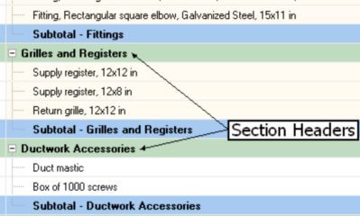
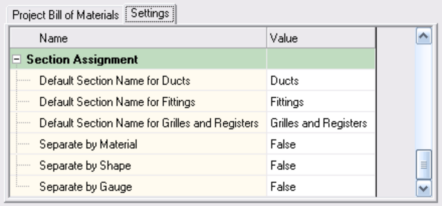
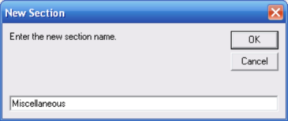
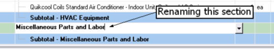

Adding and Removing Custom Sections (Project Bill of Materials Window) |
  
|
Adding and Removing Custom Sections (Project Bill of Materials Window) |
|
Sections are the rows in the project bill of materials that serve as headers for the parts that follow, as pictured below.

There are two types of sections in a project bill of materials: those added as a result of the automatic takeoff and custom ones. In the above picture, the "Grilles and Registers" section was added through the automatic takeoff, while the "Ductwork Accessories" section is custom. Sections added as a result of the automatic takeoff cannot be edited directly. They can only be defined in the Section Assignment inputs on the Settings tab of the Project Bill of Materials window, pictured below.

You can see in the above picture that you can control the names used for the section headers for ducts, fittings, and grilles and registers from the automatic takeoff. And you can see that it is also possible to have separate sections created for different materials, duct shapes, and material gauges.
Custom sections can be added by clicking "Add/Remove Section | Add Section" in the Project Bill of Materials window's toolbar. That will open the New Section dialog, shown below, where you can type in the name of the new section.

You can rename custom sections by double clicking on the section header and typing in a new name, as pictured below.
